收录于合集
文献来源： Daniel Stegmueller(2011), “Apples and Oranges? The Problem of Equivalence in Comparative Research,” Political Analysis , 2011, Vol.19, No.4, pp.471−487.
作者简介： Daniel Stegmueller，杜克大学政治学系副教授，研究方向为政治经济学、政治行为和比较研究中的贝叶斯模型和稳健推断。
比较研究中的可比性
跨文化比较研究的数据给研究者在不同国家之间进行对比和理论检验带来了便利，但是同时带来了可比性的问题。态度和偏好在国家间存在异质性，虽然研究人员常用分层模型来适配，但是这种方法只解决了不同国家的态度差异，往往忽略了不同国家的非随机测量误差而带来的系统性偏差。为此，作者使用了分层混合项目反应理论模型（multilevel mixture item response theory model）来解决这一问题。
由于个人态度无法直接观测，故研究人员往往利用因子分析将某一态度的不同面向得分进行整合，用因子得分代替态度潜变量。在比较研究中，这一方法的问题在于其忽略了不同国家民众回答问题的系统性差异，这种方法效应（method effects）造成巨大的测量误差。目前的部分研究表明，有些国家的民众有选择极端选项的倾向，而有些国家的民众更倾向于选择中间选项避免极端选项。这意味着有相同倾向的个体可能会选择不同的选项，影响如图1所示：
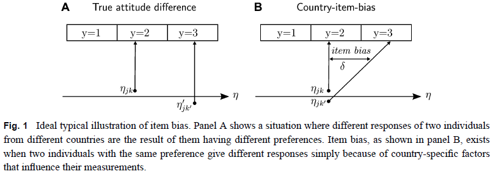
所以在研究中，需要区分因测量问题而带来的系统差异和不同国家间的态度真实差异。尽管如此，我们却不能因噎废食而放弃比较，这样我们会失去大量的信息。作者认为因子分析模型无法解决这一问题，需要利用其它的测量模型来区分两种差异。
** 多层混合IRT模型 **
作者利用类似于广义线性模型的方式将变量进行潜变量连续化。对于国家k的个体j选择项目i中c选项的概率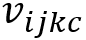 来说，有
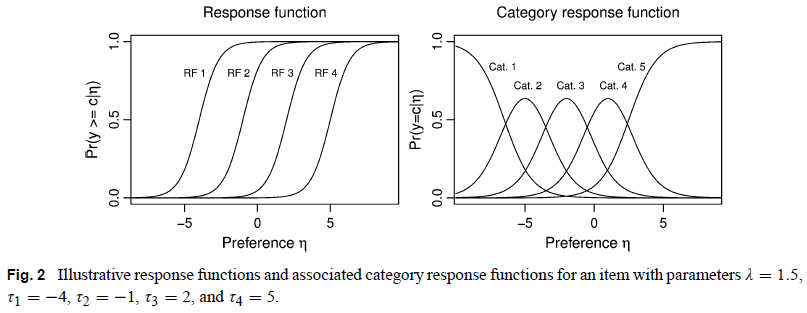
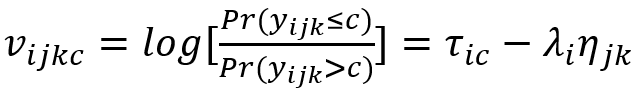
其中λi代表项目i中潜在倾向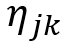 的因子荷载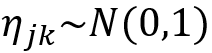 。τic为强度系数（intensity）,其中阈值越高，则越有可能通过（多级项目反应理论）。
则对于不同的选择概率有
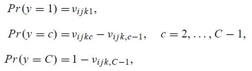
将不同国家的态度差异ηk纳入考虑中，则形成一个二层的分层模型，第一层为题项，嵌套在第二层个体中，第二层的方程为
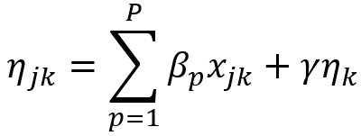
上述模型仅解释了不同国家的真实态度差异，如果再将不同国家的测量系统差异考虑在内，模型则变为
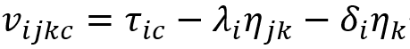
上述两个模型的图示如下。左边的图示A表示解释变量x和国家间态度的差异对个体态度潜变量的影响，不考虑国家间的系统测量差异。而右边的图示B将国家间的系统测量差异纳入考虑范围中，即国家层次的变量对个体态度的潜变量既存在随机效应，影响大小为γ，也存在国家间的系统测量误差对最终结果的直接影响，影响大小为δ。
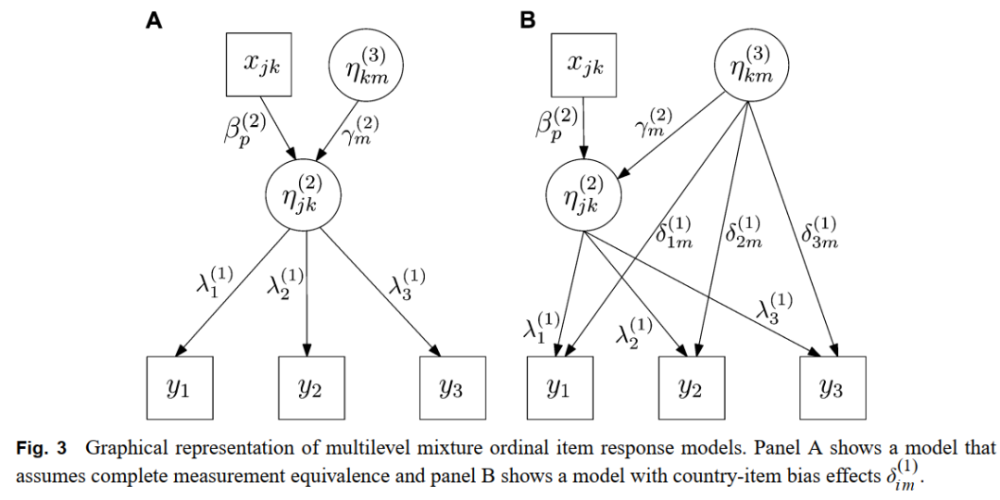
上述模型为传统的参数假定，即认为这种国家间系统差异的随机效应服从均值为0的正态分布。但是也可以做非参数估计，认为这种影响受到某些离散的混合因素所影响。换句话说，随机效应不是连续的，而是有M个因素混合而成的离散随机效应。模型为
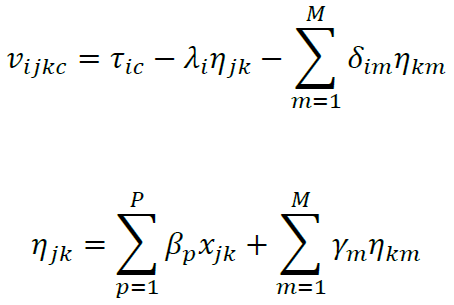
其中加入约束条件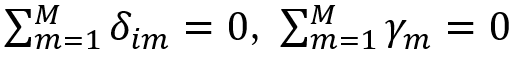 。这样做的好处在于：其一，这种方法生成了数量有限的国家的混合体，它们共享同一参数值，约束条件使得模型可以估计出不同国家相对于总体均值有偏响应概率的大小；其二，由于比较研究中国家数量较少，故研究人员不会假定这一参数的正态性。而设定非参数的类别潜变量可以避免正态假定，依据混合成份的数量来进行近似估计，产生所谓的非参数极大似然估计值。
技能特殊性和社会支付偏好 ****
在建立完模型后，作者利用建立好的模型来进行数据分析，检验模型的可用性。作者考虑了民主国家的再分配问题。再分配被认为是富人向穷人的一次性转移，一般来说，收入越高者再分配倾向越低。作者认为，技能能够改变收入和再分配倾向的关系。在保持收入不变的情况下，特殊技能和普通技能的优势比越高，个体越倾向于再分配支出。也就是说，对这种社会保障性再分配支出取决于中间选民的技能结构。
为了验证以上观点，作者使用了1996年国际社会调查（International SocialSurvey Programme）数据，用政府在健康、失业和养老金上的支出来表示社会保护性再分配支出。同时，作者将工作状态，年龄、性别、信息获取和左右政党支持来作为控制变量。
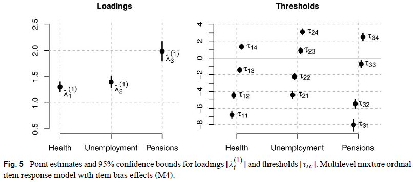
图5是IRT模型的可视化，由图显示，因子荷载和强度系数均显著，且不同的阈值（thresholds）分布比较均匀，误差较小，整体的估计比较精确。
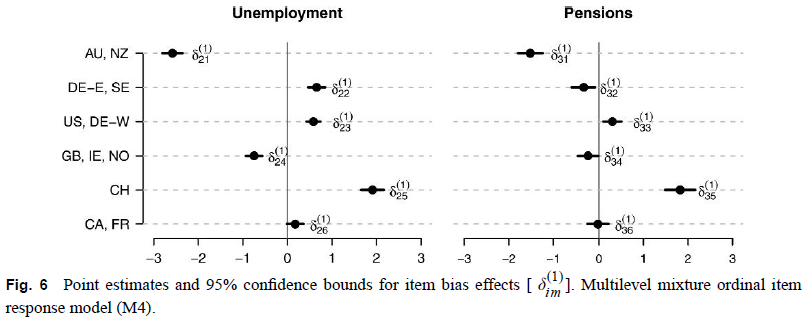
图6则是失业和养老金的国家间系统差异系数的估计。纵坐标为不同的国家，由图可知，来自澳大利亚和新西兰（AU，NZ）的国家系统差异最大，也即测量偏差最大。这不仅证实了国家间测量差异的存在，也证明了不同国家的测量差异的大小存在区别。
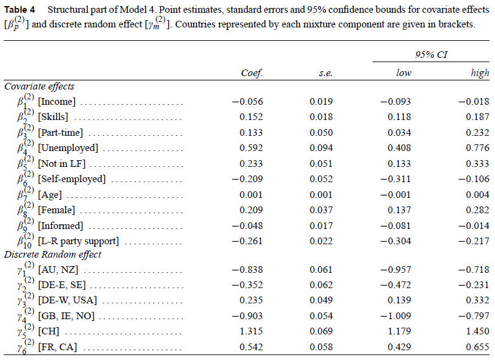
表4是模型的回归系数和95%的置信区间，由表可知，不同国家的系统差异（Discrete Random Effect）对因变量有显著的直接影响，且不同国家的影响程度不同。此外，其他自变量的影响也都表现显著。收入的协方差系数为负验证了收入越高，越不支持再分配的理论。技能的协方差系数为正说明工人对劳动力市场风险的预估和对社会保障性再分配的需求。
最后，作者将使用因子分析的线性回归模型、分层模型和作者提出的分层IRT模型所计算出的结果进行了比较。
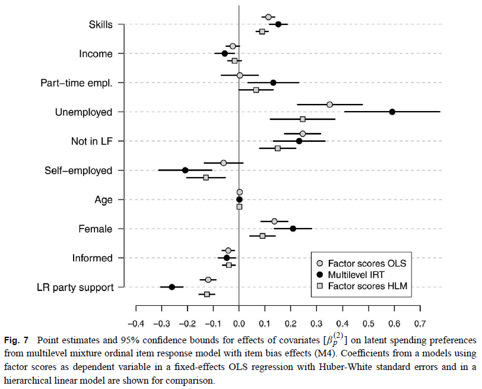
图7显示，在没有考虑国家间系统测量差异的线性回归模型和分层线性模型中，估计的系数基本都小于多层IRT模型所估计的系数。作者认为，如果研究人员忽略了国家间的测量偏差，那么最后所估计出的结果就是有偏的。在作者的模型中，这一偏误的影响在估计收入和非全职工作的协方差系数时特别明显，传统的分析说明这两个变量是没有影响的，但是分层IRT模型证明二者对社会再分配倾向有着理论上预期的影响。这一模型给过往的研究提供了更为清晰的证据。
编译：刘天祥 审校：杨端程 编辑：郭静远
【政文观止Poliview】系头条号签约作者